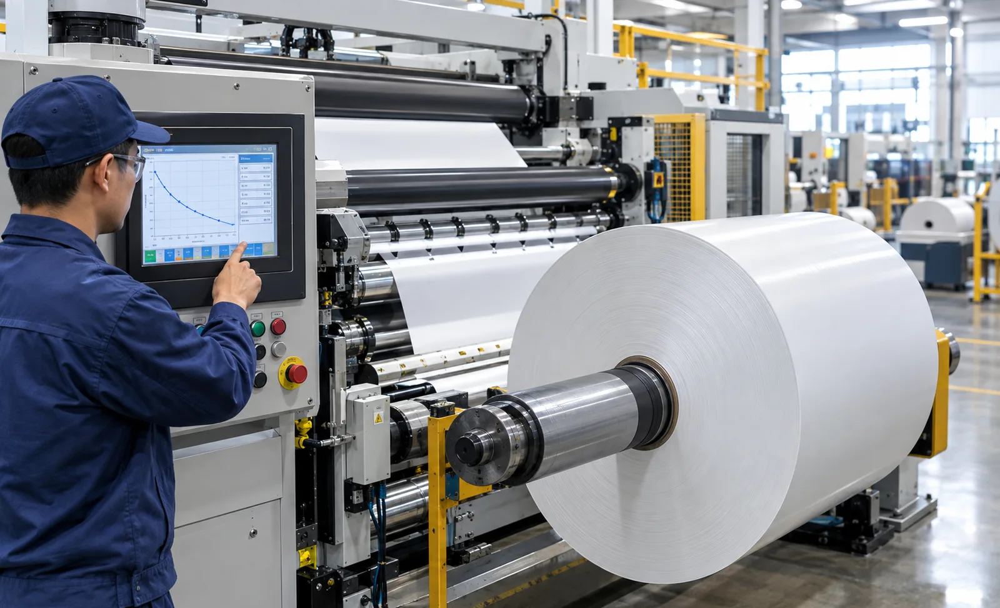
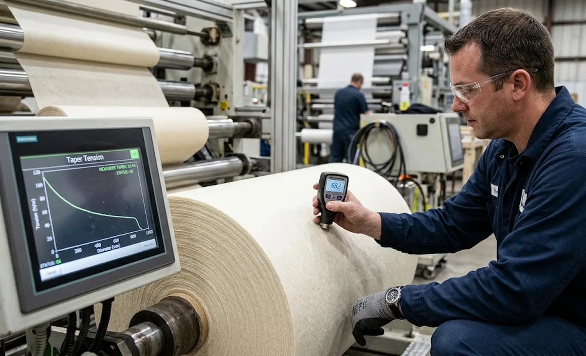

Published October 24, 2026 | By HDPTH Technical Editorial Team

Ask three converters what tension they run and you often get one number: the HMI setpoint. That number hides the fact that a roll is a living structure. At the core, wraps must grip hard enough to lock the layers together and prevent telescoping; at the surface, the same absolute tension crushes the layers beneath, traps air unevenly and locks in defects. Taper tension acknowledges this and scales the setpoint down as diameter grows. The buyer’s question is whether the profile, its limits and its verification are written into the purchase specification.
Why a constant tension setpoint fails at the roll
Constant tension is defensible only for rolls with a small build ratio, typically below about 2:1 in diameter; beyond that the physics turn against you. High tension held to the outside densifies outer wraps more than inner ones, so the roll develops a hardness gradient from core to surface; during storage, the stiff outer layers shrink over a softer interior and the roll shifts, stars or telescopes when it is next unwound. The opposite failure: tension low enough to protect the outside leaves the first wraps so loose that air is entrained at the core, and the roll spins on the shaft or cannot be unwound under tension. Both are tension-profile problems, preventable with a correctly shaped taper curve.
Choosing the taper profile: linear, hyperbolic and step curves
A linear taper drops tension in equal steps per unit of diameter increase — simple, predictable and adequate for most nonwovens and papers. A hyperbolic (percentage) taper keeps the ratio of tension to current diameter constant, which suits elastic films because wrap stress stays proportionally similar as the roll builds. Step profiles drop tension at defined diameter thresholds and suit materials with a known vulnerable build range. When comparing suppliers, ask which curves the controller offers, whether the curve can be previewed on the HMI before the run, and whether intermediate points can be edited. A controller with only a fixed linear percentage cannot tune the mid-roll region where most defects originate.
Setting start tension, end tension and taper limits
The profile shape is only half the specification; the endpoints decide everything. Start tension is set by web properties — thin, weak or elastic webs start lower — and by what the unwind and process zones can sustain. End tension must still hold the outer wraps and keep the finished roll square, typically 40 to 80 percent of the start value. Between the endpoints, specify hard limits: a tension floor that stops operators flattening the profile to chase density, and a maximum that protects delicate materials. On a well-run line, taper values live in named recipes with change permissions.
Material-specific taper guidelines and the role of diameter accuracy
Taper values are material decisions. Stiff biaxially oriented films run a nearly flat taper of 10 to 20 percent; stretch-sensitive films and thin nonwovens 20 to 40 percent; paper and board 15 to 30 percent; compressible bulky nonwovens 30 to 50 percent to avoid crushing the outer layers. Execution depends on the controller knowing the current roll diameter accurately; an error shifts the whole curve. Ask how diameter is tracked, whether it resets automatically at every new core, and how the displayed value is calibrated. On duplex turrets, each side must track independently or the second roll starts on a wrong point of the curve. For lanes that differ greatly in width or for very sensitive webs, per-lane tension control or differential rewind shafts let each roll follow its own behaviour.

Drive, control and recipe requirements to specify
Taper is executed by the rewind drive, so the drive’s torque control quality sets the ceiling on what any profile can achieve. Specify: continuous torque regulation from near-zero to full-roll load, diameter tracking with automatic reset at each core, selectable linear and hyperbolic curves with editable points, per-recipe storage of start tension, end tension and profile shape, and a live tension-versus-diameter trend. The interlock layer matters as much: the machine should warn or hold when tension leaves the programmed envelope and should not allow taper to be disabled without supervisory permission. Finally, require the taper calculation method to be stated in the manual, since controllers can compute the curve at different diameter points.
Taper tension acceptance tests for the contract
Taper performance is provable, so write it into the FAT protocol. A complete clause has four elements. First, wind one full roll of your material at production speed on the agreed profile, core to maximum diameter. Second, the measurement: roll hardness from core to surface compared against the programmed curve, plus displayed-versus-actual diameter verification. Third, the robustness check: repeat with the profile deliberately mistuned and confirm the interlock responds. Fourth, the record: profile values, hardness readings and trends filed in the FAT report. For background on the winding physics, start with our taper tension reference, pair the hardness evidence with our roll hardness testing guide, and anchor the programme when specifying production-critical equipment such as HDPTH high-speed slitting machines, where taper profiles, diameter tracking and recipe interlocks are engineered into the rewind control as standard.
Specifying your next slitter rewinder?
Tell HDPTH your material, width and speed. We design taper tension control — profile curves, diameter tracking and recipe interlocks — into the rewind system, and prove it on your web at the FAT.
Submit Your Project InquiryFrequently asked questions
What is a taper tension profile on a slitter rewinder?
It reduces web tension progressively as roll diameter grows instead of holding one constant setpoint from core to full roll. The controller tracks roll diameter and applies a programmed curve, usually a percentage drop from start to end tension, giving a roll that is firm at the core, softer outside and stable in storage.
How much taper should we apply for film versus nonwoven rolls?
There is no universal figure. Stiff films such as PET and OPP often run a nearly flat 10 to 20 percent taper, because they creep under load and lose register if wound too soft. Stretch-sensitive films and thin nonwovens typically use 20 to 40 percent, while compressible bulky nonwovens tolerate 30 to 50 percent to avoid crushing the outer layers. Develop final values in winding trials on your material.
Does taper tension need a dedicated rewind motor or drive?
Not a dedicated one, but it needs accurate diameter tracking and torque control. The controller must know roll diameter continuously, and the rewind drive must regulate torque smoothly from near zero to full roll weight. Verify the hardware and the taper calculation method in the FAT, on your material, at production speed.
Should every slit lane use the same taper tension profile?
Usually yes for lanes of equal width, but the profile should be parameterised per recipe rather than hard-wired. When lanes differ greatly in width or the material is sensitive, individual lane tension control or differential rewind shafts give each roll its own behaviour. Store taper values and limits as named recipes so operators cannot drift into ad-hoc settings.
How do we prove taper tension performance at machine acceptance?
Wind at least one full roll of your material at production speed with the agreed profile, then measure roll hardness from core to surface at several points. Compare against the profile, verify displayed versus actual diameter, and repeat with the profile deliberately mistuned to confirm the interlock responds. Document the settings and readings in the FAT report.